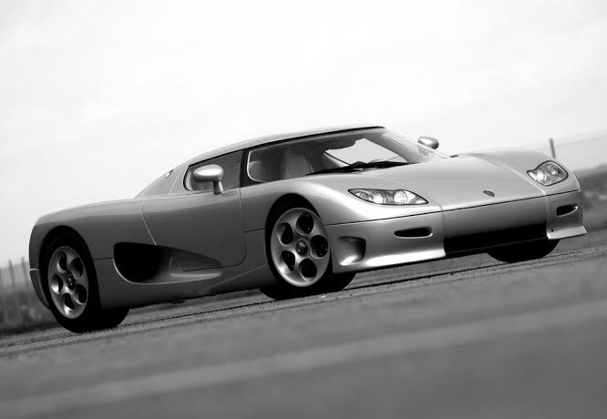
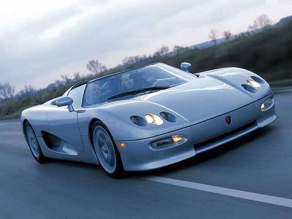
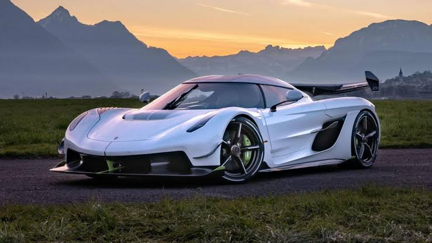

| Company name | Koenigsegg Automotive AB |
|---|---|
| English transcript | Koenigsegg |
| Founder | Christian von Koenigsegg |
| Founded on | 1994, Sweden |
| Headquarters | Ängelholm, Sweden |
| Parent organization | Koenigsegg |
| Chairman | Christian von Koenigsegg |
| CEO | Christian von Koenigsegg |
| No.of production plants | 1 |
| Customer service | 00968 24482490 |
On August 12, 1994, a 22-year-old Christian von Koenigsegg decided to follow his dream and build the world’s greatest super-sports car. Koenigsegg Automotive is born.
It was nearly two years in the making but the Koenigsegg concept vehicle – ‘CC’ – was finally driven in public for the first time by Rickard Rydell at an event at Anderstorp race track in 1996.Other renowned race-car drivers to test the prototype included Picko Troberg and Calle Rosenblad. All were amazed by the Koenigsegg’s outstanding performance. The concept worked. It was time to introduce Koenigsegg to prospective buyers.
The world’s first ‘green’ supercar was launched in 2007 with the worldwide debut of the Koenigsegg CCXR. The CCXR took Koenigsegg’s potent twin-supercharged V8 to a whole new level thanks to a flex-fuel sensor and hardware allowing the car to run on either regular gasoline, E85 (85% ethanol) or any mix in between. The higher octane rating of E85 fuel lifted the total output of the CCXR to 1,018hp, a record at the time. The CCXR also debuted Koenigsegg’s new Chrono instrument cluster, providing advanced safety and aesthetics.One CCXR model was specially built to allow it to run on E100 fuel. It features a blue ‘R’ badge on the side flank instead of the traditional green.
